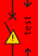

3VA27
The 3VA27 molded case circuit breaker is a current-limiting circuit breaker with IEC certification and is an addition to the existing 3VA IEC portfolio.
Current-limiting molded case circuit breakers are defined as:
Circuit breaker that, within a specified range of current, prevents the let-through current from reaching the prospective peak value and which limits the let-through energy (I2t) to a value less than the let-through energy of a half-cycle wave of the symmetrical prospective current.
These are the positive characteristics of a protection device that is most frequently used on the outgoing side and that, like the 3VA27 molded case circuit breaker, is dynamically selective and current limiting in the event of a fault.
Current limiting means that the peak value of the prospective impulse short-circuit current ip is limited to a smaller let-through current iD. Effective current limitation means that the circuit breakers and busbar trunking systems can be constructed more compactly. In the event of a short-circuit, the molded case circuit breaker substantially reduces the magnitude of the letthrough currents, that is reduces the load reaching downstream equipment (less thermal load, lower dynamic forces). The let-through energy is also significantly reduced. 3VA molded case circuit breakers are designed to be current limiting.
It has the following characteristics:
- Frame size 1600 A with a rated current In of 800 A to 1600 A
- Choice of two designs:
- as a toggle operating mechanism, e.g. as an additional manual operating mechanism
- as a stored energy spring mechanism for integration of internal spring charging motors (external dimensions are not affected by this)
Optionally available either as a fixed-mounted version or as a withdrawable version. An especially high Icu value (up to 110kA @415V) and an Icw value (up to 20kA 1s).
State Symbol without Guide Frame | State Symbol with Guide Frame | Description of the State |
|
| The circuit breaker is absent. |
| The molded case circuit breaker is in the connected position and closed. Currently neither trip messages nor warning messages nor threshold messages pending. | |
| The molded case circuit breaker is in the connected position and open. Currently neither trip messages nor warning messages nor threshold messages pending. | |
| The molded case circuit breaker is in the connected position and closed. At least one warning message or one threshold warning is pending. | |
| The molded case circuit breaker is in the connected position and open. At least one warning message or one threshold warning is pending. | |
| The molded case circuit breaker is in the connected position and has tripped. A trip message is pending. | |
| The molded case circuit breaker is in the connected position and open. A trip message is pending. | |
|
| The circuit breaker is in the test position and closed. Currently neither trip messages nor warning messages nor threshold messages pending. |
|
| The circuit breaker is in the test position and is open. Currently neither trip messages nor warning messages nor threshold messages pending. |
|
| The circuit breaker is in the test position and closed. At least one warning message or one threshold warning is pending. |
|
| The circuit breaker is in the test position and is open. At least one warning message or one threshold warning is pending. |
|  | The circuit breaker is in the test position and is open. A trip message is pending. |


NOTE:
The 3VA27 circuit breaker does not support Power Quality.
Load management is possible using Reactions. You can configure conditions based on requirements where you can turn ON or OFF loads, through breaker ON or OFF using digital output of PAC meters.